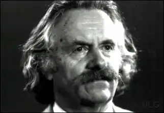
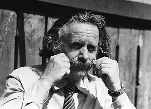
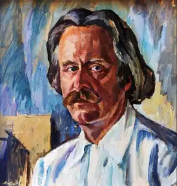

Іван Чендей
(1922 р. нар.)
Першим літературним учителем Івана Чендея була народна творчість — казка, легенда, пісня-коломийка. Їх він чув від матері, потім вичитував у журналі "Наш рідний край". Були ще різдвяні вертепи з колядками-лицедіями, народні весняні забави, похоронні голосіння, ворожіння й заклинання, верховинські весілля... Все це збагачувало уяву, захоплювало, вражало... На час визволення Закарпаття 1944p. від фашистів Іван Чендей був учасником літературного збірника хустських гімназистів. Головною школою для майбутнього письменника стала праця в обласній газеті "Закарпатська правда", до редакції якої він прийшов у березні 1945p. Згодом Іван Чендей закінчує Ужгородський університет, Вищі літературні курси в Москві. Новела "Чайки летять на Схід" дала назву першій, у 1955p. виданій книжечці оповідань Івана Чендея. Назва ця сконденсувала високу символіку віками очікуваного й виборюваного закарпатцями єднання з братами на Сході. У новелі через трагедійну велич самопожертви батька й сина розкривається незламність народного духу. Зворушливо й правдиво, духовно сильними й благородними зображує своїх земляків письменник і в інших оповіданнях, нарисах, повістях, зібраних у збірках "Вітер з полонин" (1958), "Ватри не згасають" (1960), "Чорнокнижник" (1961), "Поєдинок" (1962), "Терен цвіте" (1967), "Коли на ранок благословлялось" (1967), "Зелена Верховина" (1975), "Свалявські зустрічі" (1977), "Теплий дощ" (1979), "Казка білого інею" (1979), "Кринична вода" (1980) та ін. У 1965p. виходить друком роман "Птахи полишають гнізда...", у 1989 — "Скрип колиски". Іван Чендей писав кіносценарії, перекладав з угорської мови. І заселяв свої твори новими героями, а частіше — начеб обережно переводив їх із уже написаних у нові — і тих, привабливих своєю моральною чистотою, красою духовного світу, і тих, чию непогамовну зажерливість, скупість і моральну ницість хотів висвітлити правдою сучасності. Історія й сучасність нероз'ємно переплелися в творчості письменника. Своєрідність творчої індивідуальності Івана Чендея полягає в максималістській увазі до найвищих категорій людської моральності, що, зрозуміло, передбачає загострену правдивість художнього відображення життя. Це зумовило ідейно-тематичну та стильову оригінальність Чендея-прозаїка, яку переконливо засвідчив роман "Птахи полишають гнізда...". Спокійно поглядала на білий світ віконцями хата газди Михайла Пригари, який і не відав, що змушений буде покинути рідну, обжиту дідами землю. Втрата землі в умовах буржуазної сваволі означала голод, далеку дорогу за океан або розпач, який гасився в шинку. Старий Пригара також розгублено апелює до закону, коли голова сільської Ради Дмитро Славинець повідомляє його про будівництво електростанції в долині ріки Бистрої, вода якої затопить його садибу. Згодом колгосп вибудує Пригарі нову, з широкими вікнами, з великими сінями світлицю. Та у думках, тривожними ночами, Михайло буде повертатися в рідну хату, буде чути, як скрипить у ній колиска, буде бачити "стіл у кутку і лавицю, що її з клена витесав прадід...". Традиційні уявлення про фаталістичну визначеність долі людини на землі, про необхідність щоденного, щохвилинного спілкування з природою, про невичерпність гармонійної послідовності й змінності поколінь, пір року, буднів і свят, людських обов'язків, радощів і печалей настільки органічні для Михайла Пригари, що з порушенням цих норм і форм буття починають хитатися і розвалюватися його духовні й моральні основи. Мине понад десять років після написання "Птахів...", і російський прозаїк Валентин Распутін у повісті "Прощание с Матерой" звернеться до цих проблем і виступить проти утилітаризму, ігнорування прадавніх святинь, які духовно єднають людину з її минулим, із землею. Чендей одним із перших в українській прозі 60-х років художньо переконливо розкрив внутрішній людський зміст єдності людини з духовним материком свого народу, з моральними цінностями, набутими у віках. У творчості І. Чендея перехрещуються важливі соціальні, духовні й моральні координати історії Закарпаття. Впевнено наближався письменник до народного характеру-типу, ненав'язливо, але послідовно, від твору до твору, проводячи ідею добротворення, високого призначення людського буття на землі. Доброї слави по багатьох селах і далеких околицях зажив майстер-тесляр Іван (повість "Іванові журавлі"). Коли поминали його люди, згадували мости, які Іван збудував, хати, які він зводив, дороги, його руками прокладені... Мамині невтомні руки піднесено оспівані в повісті "Кринична вода". У батька (автобіографічна повість "Луна блакитного овиду") — широка, тверда, мозоляста долоня як свідчення порядності й цноти. І слова батька, які значною мірою визначають властиві творчості Івана Чендея морально-етичні принципи характеротворення: "Чесно робити тяжко, але від чесної роботи легко на душі..." Наступні збірки Івана Чендея — "Теплий дощ", "Казка білого інею", "Кринична вода" засвідчують зосередженість письменника на дослідженні соціально-психологічної природи людських характерів, їхніх морально-філософських першооснов. Незмінно в центрі уваги письменника — віками витворювані народом духовні цінності. Як розуміти духовність? Де, коли, в якій ситуації втрачаються визначальні критерії інтелігентності, елементарна самокритичність, як то сталося з письменником Гаманом (оповідання "Комаха в бурштині")? Чому його так навально захопила жадоба наживи, пихата вдоволеність своїми писаннями?.. Прийшла старість, огорнула самотність, і тепер Гаман з гіркотою згадує слова покійної дружини: "Ти ціле життя брів на гору, а дійсно всього вибирався на утлі пригірки..." Оповідання "Комаха в бурштині" написано не в традиційній для Івана Чендея манері. Засобами іронії, сарказму, впевненими переходами від монологічної розповіді до "відстороненої" констатації подій, вмонтуванням у текст оповідання невеличкої п'єси про "боротьбу" Гамана з видавництвом Іван Чендей досягає значного ефекту в сатиричному розвінчуванні новітніх форм суспільної мімікрії. Історія його краю — в його творах. Вона відлунює в них гомоном блакитних овидів дитинства, складними перипетіями людських взаємин, світить чарівним світлом народних казок і легенд... М. Жулинський Історія української літератури ХХ ст. — Кн. 2. — К.: Либідь, 1998.